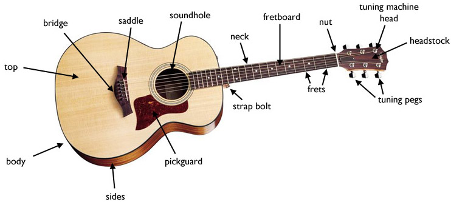

The picture below depicts the basic components of an acoustic guitar.
Tuning the guitar is done by turning the tuning pegs untill the right pitch is reached. In the video below you can find the correct pitch every string in so called "standard e tuning".
Copyright © 2017 - Gaute Tessand Baalsrud